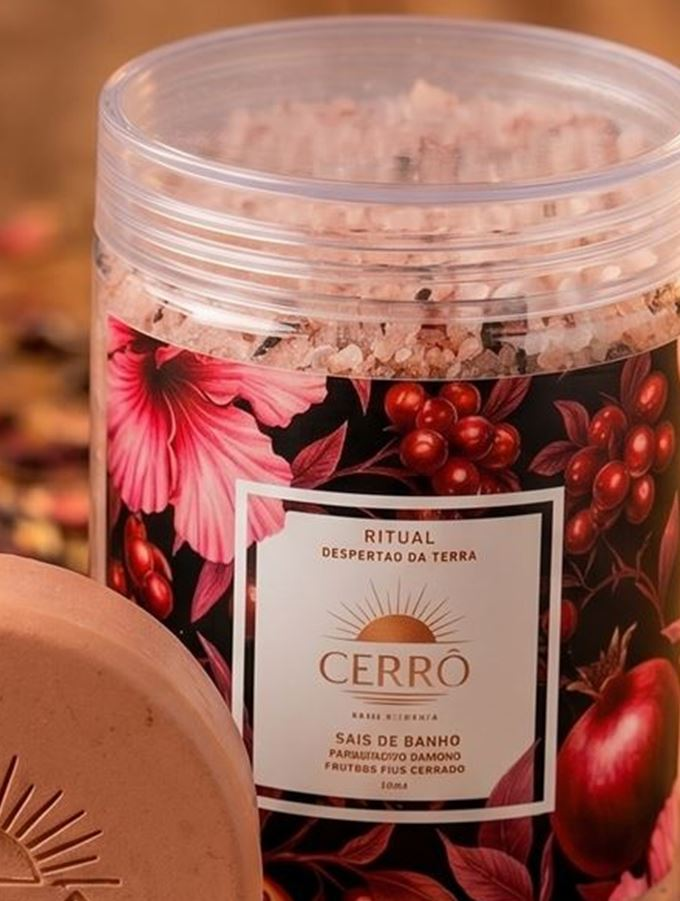
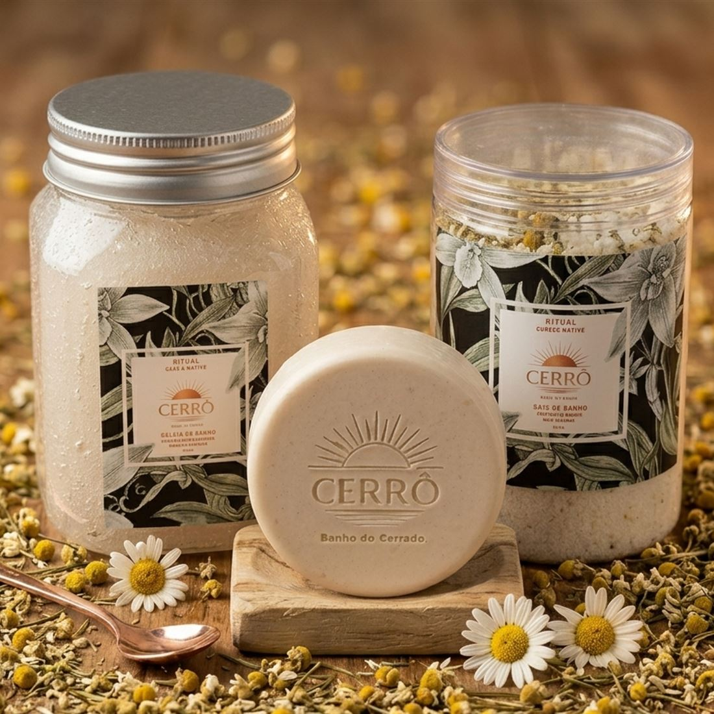
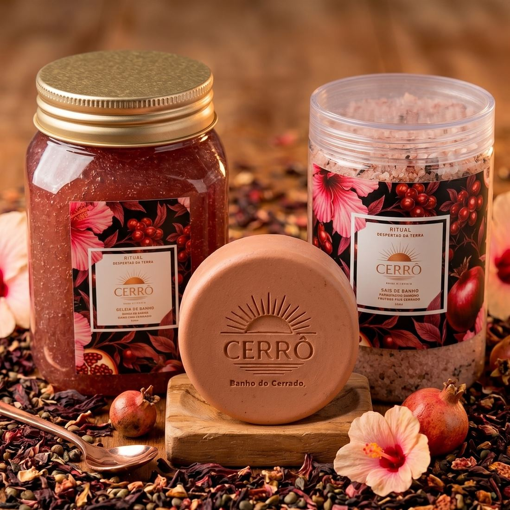
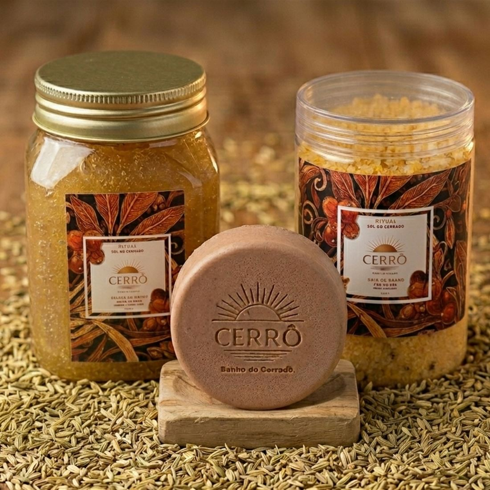
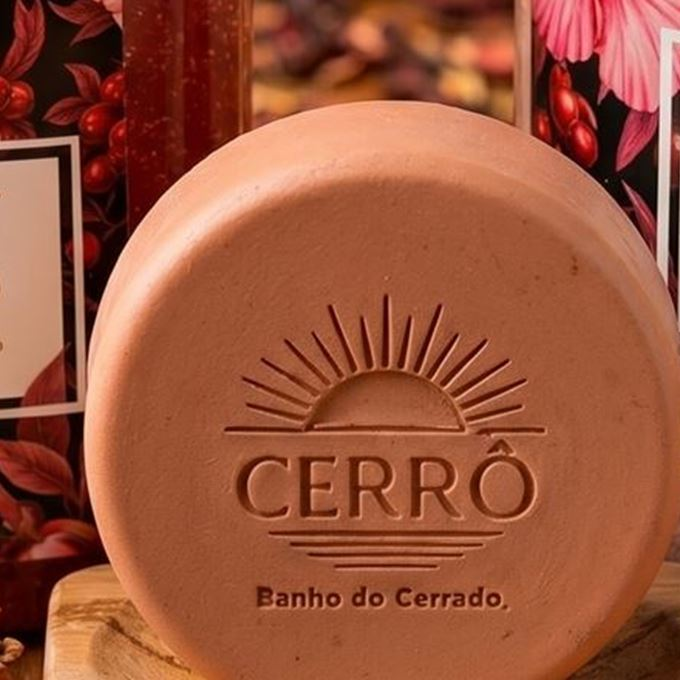
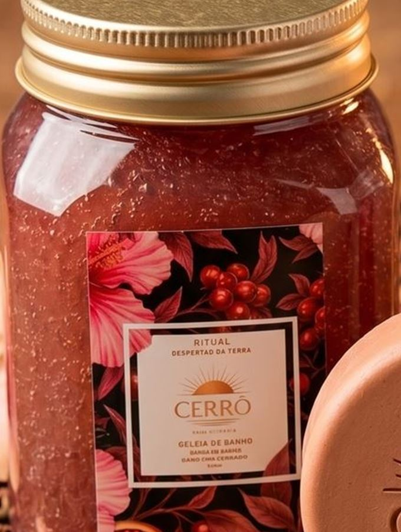

Saboaria artesanal do Cerrado
CERRÔ
Sinta a força da terra, viva o seu ritual.
Desça devagar
O catálogo inteiro
São três.



Pureza NativaBaunilha e sândalo
Despertar da TerraRomã, pitanga e hibisco
Sol do CerradoCopaíba e capim-limão
80 gramas, três argilas
Prensado à mão,
um de cada vez.
Um ritual, três peças
A ordem importa.

Brisa Rosada

Néctar Suave
O que tem dentro
BarbatimãoCopaíbaHibisco
Rosa mosquetaCapim-limãoArgila rosa
Argila brancaArgila vermelhaErva-doce
CamomilaÓleo de amêndoasLeite de cabra
Doze ativos, muitos nativos do Cerrado, trabalhados em pequenos lotes. Cada fórmula existe para uma necessidade diferente de pele.
Escolha o seu
Três rituais,
três forças
Cada ritual reúne sabonete, sal de banho e geleia em torno de uma mesma alquimia. Leve as peças separadas ou o ritual completo.
Não sabe qual escolher?
Encontre
o seu ritual
Cada ritual foi formulado para uma necessidade diferente de pele. Três perguntas e a gente te diz qual é o seu.
Antes de comprar
Perguntas
frequentes
Depende da frequência. Em uso regular, de duas a três vezes por semana, o ritual completo dura de seis a oito semanas. O sabonete de 80 g costuma acabar primeiro; os sais de 200 g rendem cerca de oito banhos de imersão, e a geleia de 350 ml é a que dura mais.
Não. Na banheira o efeito é o mais completo, porque as flores e sementes infundem na água quente. Sem banheira, dissolva uma colher dos sais em uma bacia ou balde de água bem quente e use com uma bucha úmida sob o chuveiro. O aroma preenche o box do mesmo jeito.
O Ritual Despertar da Terra foi formulado justamente para peles sensíveis. Ainda assim, nossos produtos são cosméticos e não substituem avaliação médica: se você tem alergia a algum ingrediente, está grávida, amamentando ou trata alguma condição de pele, converse com um profissional antes. A lista completa de ingredientes está no rótulo, e também no WhatsApp, se quiser conferir antes de comprar.
Como é produção artesanal em pequenos lotes, o pedido leva até 3 dias úteis para ser preparado. Depois disso, o transporte leva de 3 a 8 dias úteis conforme a região. Você recebe o código de rastreio por WhatsApp e e-mail assim que postamos. Frete grátis acima de R$ 200,00.
Se o produto ainda estiver lacrado, sim. Você tem 7 dias corridos a partir do recebimento para desistir da compra, com devolução integral. Já aberto, por segurança e higiene, não conseguimos trocar por preferência de aroma. É por isso que existe o Trio de Sabonetes: para conhecer as três essências antes de escolher um ritual inteiro.
Próximo lançamento
Antes de
todo mundo
O Ritual Florescer Eterno está a caminho. Cadastre-se para saber do lançamento, das edições limitadas e das ofertas da casa.